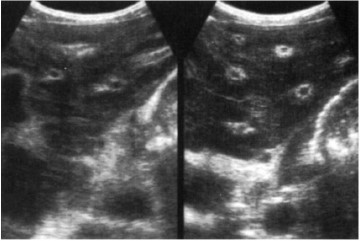
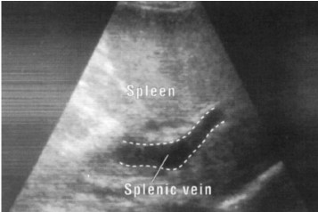
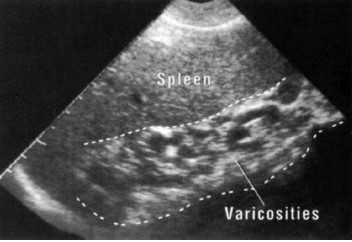

Schistosomiasis
Introduction
Hepatic schistosomiasis is a chronic liver disease caused by parasitic infection with Schistosoma mansoni or Schistosoma japonicum. It represents one of the most common causes of portal hypertension worldwide, particularly in endemic regions of Africa, South America, and Asia.
Pathophysiology
The hepatic manifestations result from:
- Egg deposition in portal venules leading to granulomatous inflammation
- Symmers' pipe-stem fibrosis - Characteristic peri-portal fibrosis without significant hepatocellular damage
- Presinusoidal portal hypertension due to obstruction of portal venules
- Portal-systemic collateral formation similar to cirrhosis but with preserved liver synthetic function until late stages
Key Point: Unlike cirrhosis, hepatic schistosomiasis typically preserves hepatocellular function until very late stages, with portal hypertension being the predominant clinical feature.
Clinical Presentation
Acute Phase (Katayama fever)
- Fever, chills, myalgia
- Hepatosplenomegaly
- Eosinophilia
- Transient pulmonary infiltrates
Chronic Phase
- Splenomegaly (often massive)
- Portal hypertension with variceal bleeding
- Ascites (less common than in cirrhosis)
- Hepatomegaly with firm, nodular liver edge
- Growth retardation in children
Important: Patients may present with hematemesis from variceal bleeding as the first manifestation of disease, often without preceding symptoms.
Ultrasound features
- Widened echogenic portal tracts, sometimes reaching a thickness of 2cm. The porta hepatis is the region affected most. Initially the liver size is enlarged. As the periportal fibrosis progresses, however, the liver becomes contracted, and the features of portal hypertension prevail
- The splenic veins may be enlarged and if there is portal hypertension, there is usually splenomegaly.
- An increase in collateral circulation may develop around the splenic hilus and along the medial edge of the liver. This is seen as tortuos, echo-free structures which must be distinguished from fluid filled bowel
- Periportal fibrosis may be either due to schistosoma mansoni or schistosoma japonicum

1. Periportal fibrosis
- Transverse section of the left liver lobe showing increased echogenicity of the portal vein walls due to fibrosis of the portal veins

2. Splenic vein dilatation
- Widened splenic vein

2. Collaterals
- An increase in collateral circulation around the splenic hilus and along the medial edge of the liver.
Prognosis
- Generally good with early treatment
- Advanced portal hypertension carries risk of variceal bleeding
- Rare progression to true cirrhosis (usually with co-infection like HBV/HCV)
- Mortality primarily from variceal hemorrhage rather than liver failure
Key Point: Co-infection with hepatitis B or C significantly worsens prognosis and accelerates progression to true cirrhosis.
References
- WHO Guidelines on Schistosomiasis. Geneva: World Health Organization; 2022.
- Gryseels B, et al. Human schistosomiasis. Lancet. 2006;368(9541):1106-18.
- Lambertucci JR. Acute schistosomiasis mansoni: revisited and reconsidered. Mem Inst Oswaldo Cruz. 2010;105(4):422-35.
- Richter J, et al. Ultrasound in schistosomiasis: A practical guide to the standardized use of ultrasonography for the assessment of schistosomiasis-related morbidity. Geneva: WHO; 2000.